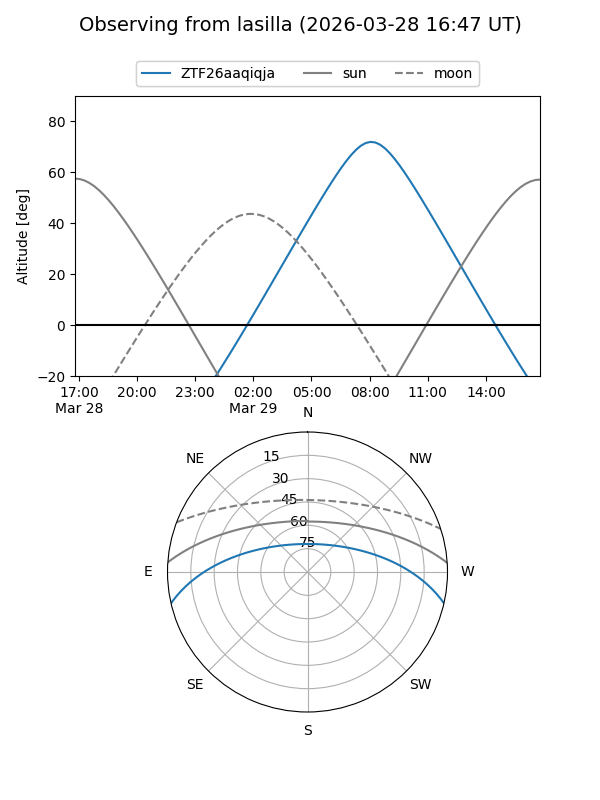
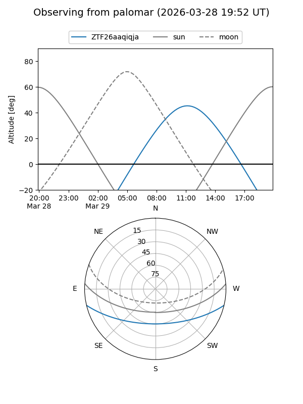

ZTF26aaqiqja
Target ZTF26aaqiqja at 2026-03-29 13:29
Aliases and brokers:
FINK: link
Lasair: link
ALeRCE: link
alt names
ZTF26aaqiqja (ztf,fink_ztf)
Coordinates:
equatorial (ra, dec) = 236.9706,-11.15181
equatorial (HMS+DMS) = 15:47:52.95,-11:09:06.51
galactic (l, b) = (357.0871,+32.59832)
Flags:
Photometry:
last ztfg=17.62, ztfr=16.84
1 ztfg, 1 ztfr detections
Lightcurve
Visibility


Additional plots